Solving Systems with Cramer's Rule
Learning Objectives
- Use Cramer’s Rule to solve systems of equations (IA 4.6.3)
Objective 1: Use Cramer’s Rule to solve systems of equations (IA 4.6.3)
Cramer’s Rule uses determinants to solve systems of equations.
Use Cramer’s rule to solve the system of equations.
Solution
| Evaluate the determinant of the system by using the coefficients of the variables | |
| Evaluate the determinant Dx. Replace the coefficients of the variable x, -2 and 1, by the constants 3 and 12 | |
| Evaluate the determinant Dy. Replace the coefficients of the variable y, 3 and 3, by the constants 3 and 12 | |
| Find x and y | |
| Write the solution as an ordered pair | |
| Check the solution in the original equations |
Practice Makes Perfect
Use Cramer’s Rule to solve the system of equations.
Solve the system of equations using Cramer’s Rule:
Solution
| Evaluate the determinant D. | 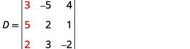 |
| Expand by minors using column 1. | |
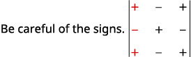 |
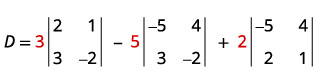 |
| Evaluate the determinants. | |
| Simplify. | |
| Simplify. | |
| Simplify. | |
| Evaluate the determinant Use the constants to replace the coefficients of x. |
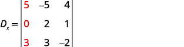 |
| Expand by minors using column 1. | ![The image displays the calculation of Dx, likely representing a determinant, using a cofactor expansion along the first row. It shows the expression as Dx = 5 multiplied by the determinant of the 2x2 matrix [[2, 1], [3, -2]], minus 0 multiplied by the determinant of [[-5, 4], [3, -2]], plus 3 multiplied by the determinant of [[-5, 4], [2, 1]]. The coefficients 5, 0, and 3 are highlighted in red.](../../media/CNX_IntAlg_Figure_04_06_018k_img.jpg) |
| Evaluate the determinants. | 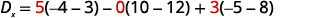 |
| Simplify. | 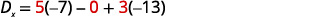 |
| Simplify. | 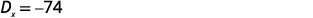 |
| Evaluate the determinant Use the constants to replace the coefficients of y. |
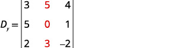 |
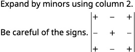 |
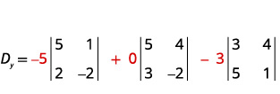 |
| Evaluate the determinants. | 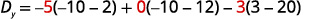 |
| Simplify. | 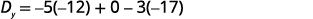 |
| Simplify. | 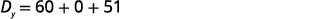 |
| Simplify. | 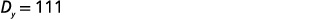 |
| Evaluate the determinant Use the constants to replace the coefficients of z. |
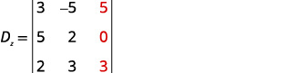 |
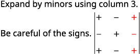 |
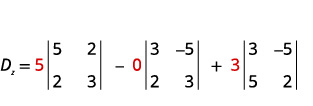 |
| Evaluate the determinants. | 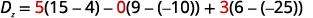 |
| Simplify. | 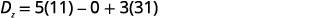 |
| Simplify. | 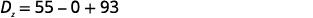 |
| Simplify. | 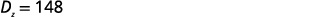 |
| Find x, y, and z. | 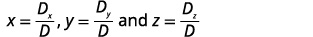 |
| Substitute in the values. | 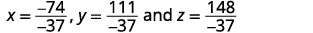 |
| Simplify. | |
| Write the solution as an ordered triple. | |
| Check that the ordered triple is a solution to all three original equations. |
We leave the check to you. |
| The solution is |
Practice Makes Perfect
Use Cramer’s Rule to solve the system of three equations.
We have learned how to solve systems of equations in two variables and three variables, and by multiple methods: substitution, addition, Gaussian elimination, using the inverse of a matrix, and graphing. Some of these methods are easier to apply than others and are more appropriate in certain situations. In this section, we will study two more strategies for solving systems of equations.
Evaluating the Determinant of a 2×2 Matrix
A determinant is a real number that can be very useful in mathematics because it has multiple applications, such as calculating area, volume, and other quantities. Here, we will use determinants to reveal whether a matrix is invertible by using the entries of a square matrix to determine whether there is a solution to the system of equations. Perhaps one of the more interesting applications, however, is their use in cryptography. Secure signals or messages are sometimes sent encoded in a matrix. The data can only be decrypted with an invertible matrix and the determinant. For our purposes, we focus on the determinant as an indication of the invertibility of the matrix. Calculating the determinant of a matrix involves following the specific patterns that are outlined in this section.
Finding the Determinant of a 2 × 2 Matrix
Find the determinant of the given matrix.
Solution
Using Cramer’s Rule to Solve a System of Two Equations in Two Variables
We will now introduce a final method for solving systems of equations that uses determinants. Known as Cramer’s Rule, this technique dates back to the middle of the 18th century and is named for its innovator, the Swiss mathematician Gabriel Cramer (1704-1752), who introduced it in 1750 in Introduction à l'Analyse des lignes Courbes algébriques. Cramer’s Rule is a viable and efficient method for finding solutions to systems with an arbitrary number of unknowns, provided that we have the same number of equations as unknowns.
Cramer’s Rule will give us the unique solution to a system of equations, if it exists. However, if the system has no solution or an infinite number of solutions, this will be indicated by a determinant of zero. To find out if the system is inconsistent or dependent, another method, such as elimination, will have to be used.
To understand Cramer’s Rule, let’s look closely at how we solve systems of linear equations using basic row operations. Consider a system of two equations in two variables.
We eliminate one variable using row operations and solve for the other. Say that we wish to solve for If equation (2) is multiplied by the opposite of the coefficient of in equation (1), equation (1) is multiplied by the coefficient of in equation (2), and we add the two equations, the variable will be eliminated.
Now, solve for
Similarly, to solve for we will eliminate
Solving for gives
Notice that the denominator for both and is the determinant of the coefficient matrix.
We can use these formulas to solve for and but Cramer’s Rule also introduces new notation:
- determinant of the coefficient matrix
- determinant of the numerator in the solution of
- determinant of the numerator in the solution of
The key to Cramer’s Rule is replacing the variable column of interest with the constant column and calculating the determinants. We can then express and as a quotient of two determinants.
Using Cramer’s Rule to Solve a 2 × 2 System
Solve the following system using Cramer’s Rule.
Solution
Solve for
Solve for
The solution is
Evaluating the Determinant of a 3 × 3 Matrix
Finding the determinant of a 2×2 matrix is straightforward, but finding the determinant of a 3×3 matrix is more complicated. One method is to augment the 3×3 matrix with a repetition of the first two columns, giving a 3×5 matrix. Then we calculate the sum of the products of entries down each of the three diagonals (upper left to lower right), and subtract the products of entries up each of the three diagonals (lower left to upper right). This is more easily understood with a visual and an example.
Find the determinant of the 3×3 matrix.
- Augment with the first two columns.
- From upper left to lower right: Multiply the entries down the first diagonal. Add the result to the product of entries down the second diagonal. Add this result to the product of the entries down the third diagonal.
- From lower left to upper right: Subtract the product of entries up the first diagonal. From this result subtract the product of entries up the second diagonal. From this result, subtract the product of entries up the third diagonal.
The algebra is as follows:
Finding the Determinant of a 3 × 3 Matrix
Find the determinant of the 3 × 3 matrix given
Solution
Augment the matrix with the first two columns and then follow the formula. Thus,
Using Cramer’s Rule to Solve a System of Three Equations in Three Variables
Now that we can find the determinant of a 3 × 3 matrix, we can apply Cramer’s Rule to solve a system of three equations in three variables. Cramer’s Rule is straightforward, following a pattern consistent with Cramer’s Rule for 2 × 2 matrices. As the order of the matrix increases to 3 × 3, however, there are many more calculations required.
When we calculate the determinant to be zero, Cramer’s Rule gives no indication as to whether the system has no solution or an infinite number of solutions. To find out, we have to perform elimination on the system.
Consider a 3 × 3 system of equations.
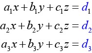
where
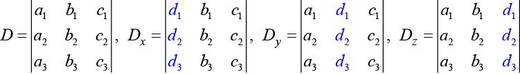
If we are writing the determinant we replace the column with the constant column. If we are writing the determinant we replace the column with the constant column. If we are writing the determinant we replace the column with the constant column. Always check the answer.
Solving a 3 × 3 System Using Cramer’s Rule
Find the solution to the given 3 × 3 system using Cramer’s Rule.
Solution
Use Cramer’s Rule.
Then,
The solution is
Using Cramer’s Rule to Solve an Inconsistent System
Solve the system of equations using Cramer’s Rule.
Solution
We begin by finding the determinants
We know that a determinant of zero means that either the system has no solution or it has an infinite number of solutions. To see which one, we use the process of elimination. Our goal is to eliminate one of the variables.
- Multiply equation (1) by
- Add the result to equation
We obtain the equation which is false. Therefore, the system has no solution. Graphing the system reveals two parallel lines. See Figure 1.
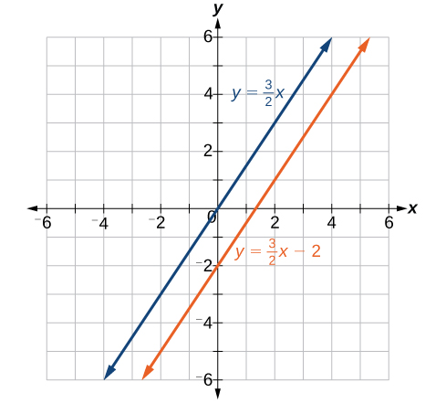
Use Cramer’s Rule to Solve a Dependent System
Solve the system with an infinite number of solutions.
Solution
Let’s find the determinant first. Set up a matrix augmented by the first two columns.
Then,
As the determinant equals zero, there is either no solution or an infinite number of solutions. We have to perform elimination to find out.
- Multiply equation (1) by and add the result to equation (3):
- Obtaining an answer of a statement that is always true, means that the system has an infinite number of solutions. Graphing the system, we can see that two of the planes are the same and they both intersect the third plane on a line. See Figure 2.
![A blue and a green strip overlap to form an X-shape. Three linear equations are presented: x - 2y + 3z = 0 and 2x - 4y + 6z = 0 are in blue text, while 3x + y + 2z = 0 is in green text. The two blue equations are equivalent, defining a single plane associated with the blue strip. The green equation defines a second, distinct plane associated with the green strip. The intersection of these two planes is represented by the overlapping region of the strips, and a horizontal double-headed arrow spans a portion of this intersection.](../../media/CNX_Precalc_Figure_09_08_005.jpg)
Understanding Properties of Determinants
There are many properties of determinants. Listed here are some properties that may be helpful in calculating the determinant of a matrix.
Illustrating Properties of Determinants
Illustrate each of the properties of determinants.
Solution
Property 1 states that if the matrix is in upper triangular form, the determinant is the product of the entries down the main diagonal.
Augment with the first two columns.
Then
Property 2 states that interchanging rows changes the sign. Given
Property 3 states that if two rows or two columns are identical, the determinant equals zero.
Property 4 states that if a row or column equals zero, the determinant equals zero. Thus,
Property 5 states that the determinant of an inverse matrix is the reciprocal of the determinant Thus,
Property 6 states that if any row or column of a matrix is multiplied by a constant, the determinant is multiplied by the same factor. Thus,
Using Cramer’s Rule and Determinant Properties to Solve a System
Find the solution to the given 3 × 3 system.
Solution
Using Cramer’s Rule, we have
Notice that the second and third columns are identical. According to Property 3, the determinant will be zero, so there is either no solution or an infinite number of solutions. We have to perform elimination to find out.
- Multiply equation (3) by –2 and add the result to equation (1).
Obtaining a statement that is a contradiction means that the system has no solution.
Key Concepts
- The determinant for is See Example 3.
- Cramer’s Rule replaces a variable column with the constant column. Solutions are See Example 4.
- To find the determinant of a 3×3 matrix, augment with the first two columns. Add the three diagonal entries (upper left to lower right) and subtract the three diagonal entries (lower left to upper right). See Example 5.
- To solve a system of three equations in three variables using Cramer’s Rule, replace a variable column with the constant column for each desired solution: See Example 6.
- Cramer’s Rule is also useful for finding the solution of a system of equations with no solution or infinite solutions. See Example 7 and Example 8.
- Certain properties of determinants are useful for solving problems. For example:
- If the matrix is in upper triangular form, the determinant equals the product of entries down the main diagonal.
- When two rows are interchanged, the determinant changes sign.
- If either two rows or two columns are identical, the determinant equals zero.
- If a matrix contains either a row of zeros or a column of zeros, the determinant equals zero.
- The determinant of an inverse matrix is the reciprocal of the determinant of the matrix
- If any row or column is multiplied by a constant, the determinant is multiplied by the same factor. See Example 9 and Example 10.
Section Exercises
Verbal
Explain why we can always evaluate the determinant of a square matrix.
Solution
A determinant is the sum and products of the entries in the matrix, so you can always evaluate that product—even if it does end up being 0.
Examining Cramer’s Rule, explain why there is no unique solution to the system when the determinant of your matrix is 0. For simplicity, use a matrix.
Explain what it means in terms of an inverse for a matrix to have a 0 determinant.
Solution
The inverse does not exist.
The determinant of matrix is 3. If you switch the rows and multiply the first row by 6 and the second row by 2, explain how to find the determinant and provide the answer.
Algebraic
For the following exercises, find the determinant.
Solution
Solution
Solution
Solution
Solution
Solution
Solution
Solution
Solution
Solution
For the following exercises, solve the system of linear equations using Cramer’s Rule.
Solution
Solution
Solution
Solution
Solution
For the following exercises, solve the system of linear equations using Cramer’s Rule.
Solution
Solution
Solution
Solution
Solution
Infinite solutions
Technology
For the following exercises, use the determinant function on a graphing utility.
Solution
Solution
Real-World Applications
For the following exercises, create a system of linear equations to describe the behavior. Then, calculate the determinant. Will there be a unique solution? If so, find the unique solution.
Two numbers add up to 56. One number is 20 less than the other.
Solution
Yes; 18, 38
Two numbers add up to 104. If you add two times the first number plus two times the second number, your total is 208
Three numbers add up to 106. The first number is 3 less than the second number. The third number is 4 more than the first number.
Solution
Yes; 33, 36, 37
Three numbers add to 216. The sum of the first two numbers is 112. The third number is 8 less than the first two numbers combined.
For the following exercises, create a system of linear equations to describe the behavior. Then, solve the system for all solutions using Cramer’s Rule.
You invest $10,000 into two accounts, which receive 8% interest and 5% interest. At the end of a year, you had $10,710 in your combined accounts. How much was invested in each account?
Solution
$7,000 in first account, $3,000 in second account.
You invest $80,000 into two accounts, $22,000 in one account, and $58,000 in the other account. At the end of one year, assuming simple interest, you have earned $2,470 in interest. The second account receives half a percent less than twice the interest on the first account. What are the interest rates for your accounts?
A theater needs to know how many adult tickets and children tickets were sold out of the 1,200 total tickets. If children’s tickets are $5.95, adult tickets are $11.15, and the total amount of revenue was $12,756, how many children’s tickets and adult tickets were sold?
Solution
120 children, 1,080 adult
A concert venue sells single tickets for $40 each and couple’s tickets for $65. If the total revenue was $18,090 and the 321 tickets were sold, how many single tickets and how many couple’s tickets were sold?
You decide to paint your kitchen green. You create the color of paint by mixing yellow and blue paints. You cannot remember how many gallons of each color went into your mix, but you know there were 10 gal total. Additionally, you kept your receipt, and know the total amount spent was $29.50. If each gallon of yellow costs $2.59, and each gallon of blue costs $3.19, how many gallons of each color go into your green mix?
Solution
4 gal yellow, 6 gal blue
You sold two types of scarves at a farmers’ market and would like to know which one was more popular. The total number of scarves sold was 56, the yellow scarf cost $10, and the purple scarf cost $11. If you had total revenue of $583, how many yellow scarves and how many purple scarves were sold?
Your garden produced two types of tomatoes, one green and one red. The red weigh 10 oz, and the green weigh 4 oz. You have 30 tomatoes, and a total weight of 13 lb, 14 oz. How many of each type of tomato do you have?
Solution
13 green tomatoes, 17 red tomatoes
At a market, the three most popular vegetables make up 53% of vegetable sales. Corn has 4% higher sales than broccoli, which has 5% more sales than onions. What percentage does each vegetable have in the market share?
At the same market, the three most popular fruits make up 37% of the total fruit sold. Strawberries sell twice as much as oranges, and kiwis sell one more percentage point than oranges. For each fruit, find the percentage of total fruit sold.
Solution
Strawberries 18%, oranges 9%, kiwi 10%
Three artists performed at a concert venue. The first one charged $15 per ticket, the second artist charged $45 per ticket, and the final one charged $22 per ticket. There were 510 tickets sold, for a total of $12,700. If the first band had 40 more audience members than the second band, how many tickets were sold for each band?
A movie theatre sold tickets to three movies. The tickets to the first movie were $5, the tickets to the second movie were $11, and the third movie was $12. 100 tickets were sold to the first movie. The total number of tickets sold was 642, for a total revenue of $6,774. How many tickets for each movie were sold?
Solution
100 for movie 1, 230 for movie 2, 312 for movie 3
For the following exercises, use this scenario: A health-conscious company decides to make a trail mix out of almonds, dried cranberries, and chocolate-covered cashews. The nutritional information for these items is shown in Table 1.
| Fat (g) | Protein (g) | Carbohydrates (g) | |
|---|---|---|---|
| Almonds (10) | 6 | 2 | 3 |
| Cranberries (10) | 0.02 | 0 | 8 |
| Cashews (10) | 7 | 3.5 | 5.5 |
For the special “low-carb”trail mix, there are 1,000 pieces of mix. The total number of carbohydrates is 425 g, and the total amount of fat is 570.2 g. If there are 200 more pieces of cashews than cranberries, how many of each item is in the trail mix?
For the “hiking” mix, there are 1,000 pieces in the mix, containing 390.8 g of fat, and 165 g of protein. If there is the same amount of almonds as cashews, how many of each item is in the trail mix?
Solution
300 almonds, 400 cranberries, 300 cashews
For the “energy-booster” mix, there are 1,000 pieces in the mix, containing 145 g of protein and 625 g of carbohydrates. If the number of almonds and cashews summed together is equivalent to the amount of cranberries, how many of each item is in the trail mix?
Review Exercises
Systems of Linear Equations: Two Variables
For the following exercises, determine whether the ordered pair is a solution to the system of equations.
and
Solution
No
and
For the following exercises, use substitution to solve the system of equations.
Solution
Solution
For the following exercises, use addition to solve the system of equations.
Solution
No solutions exist.
For the following exercises, write a system of equations to solve each problem. Solve the system of equations.
A factory has a cost of production and a revenue function What is the break-even point?
Solution
A performer charges where is the total number of attendees at a show. The venue charges $75 per ticket. After how many people buy tickets does the venue break even, and what is the value of the total tickets sold at that point?
Systems of Linear Equations: Three Variables
For the following exercises, solve the system of three equations using substitution or addition.
Solution
Infinite solutions
Solution
No solutions exist.
Solution
Solution
For the following exercises, write a system of equations to solve each problem. Solve the system of equations.
Three odd numbers sum up to 61. The smaller is one-third the larger and the middle number is 16 less than the larger. What are the three numbers?
Solution
11, 17, 33
A local theatre sells out for their show. They sell all 500 tickets for a total purse of $8,070.00. The tickets were priced at $15 for students, $12 for children, and $18 for adults. If the band sold three times as many adult tickets as children’s tickets, how many of each type was sold?
Systems of Nonlinear Equations and Inequalities: Two Variables
For the following exercises, solve the system of nonlinear equations.
Solution
Solution
No solution
Solution
No solution
For the following exercises, graph the inequality.
Solution
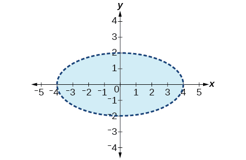
For the following exercises, graph the system of inequalities.
Solution
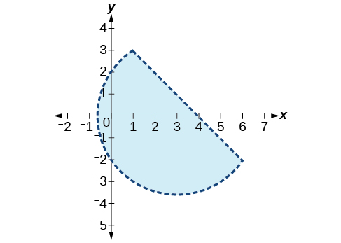
Partial Fractions
For the following exercises, decompose into partial fractions.
Solution
Solution
Solution
Solution
Matrices and Matrix Operations
For the following exercises, perform the requested operations on the given matrices.
Solution
Solution
undefined; dimensions do not match
Solution
undefined; inner dimensions do not match
Solution
Solution
Solution
undefined; inner dimensions do not match
Solving Systems with Gaussian Elimination
For the following exercises, write the system of linear equations from the augmented matrix. Indicate whether there will be a unique solution.
Solution
with infinite solutions
For the following exercises, write the augmented matrix from the system of linear equations.
Solution
Solution
For the following exercises, solve the system of linear equations using Gaussian elimination.
Solution
No solutions exist.
Solution
No solutions exist.
Solving Systems with Inverses
For the following exercises, find the inverse of the matrix.
Solution
Solution
No inverse exists.
For the following exercises, find the solutions by computing the inverse of the matrix.
Solution
Solution
For the following exercises, write a system of equations to solve each problem. Solve the system of equations.
Students were asked to bring their favorite fruit to class. 90% of the fruits consisted of banana, apple, and oranges. If oranges were half as popular as bananas and apples were 5% more popular than bananas, what are the percentages of each individual fruit?
Solution
17% oranges, 34% bananas, 39% apples
A school club held a bake sale to raise money and sold brownies and chocolate chip cookies. They priced the brownies at $2 and the chocolate chip cookies at $1. They raised $250 and sold 175 items. How many brownies and how many cookies were sold?
Solving Systems with Cramer's Rule
For the following exercises, find the determinant.
Solution
0
Solution
6
For the following exercises, use Cramer’s Rule to solve the linear systems of equations.
Solution
Solution
(x, 5x + 3)
Solution
Practice Test
Is the following ordered pair a solution to the system of equations?
with
Solution
Yes
For the following exercises, solve the systems of linear and nonlinear equations using substitution or elimination. Indicate if no solution exists.
Solution
No solutions exist.
Solution
Solution
Solution
For the following exercises, graph the following inequalities.
Solution

For the following exercises, write the partial fraction decomposition.
Solution
For the following exercises, perform the given matrix operations.
Solution
Solution
Solution
If what would be the determinant if you switched rows 1 and 3, multiplied the second row by 12, and took the inverse?
Rewrite the system of linear equations as an augmented matrix.
Solution
Rewrite the augmented matrix as a system of linear equations.
For the following exercises, use Gaussian elimination to solve the systems of equations.
Solution
No solutions exist.
For the following exercises, use the inverse of a matrix to solve the systems of equations.
Solution
For the following exercises, use Cramer’s Rule to solve the systems of equations.
Solution
For the following exercises, solve using a system of linear equations.
A factory producing cell phones has the following cost and revenue functions: and What is the range of cell phones they should produce each day so there is profit? Round to the nearest number that generates profit.
Solution
32 or more cell phones per day
A small fair charges $1.50 for students, $1 for children, and $2 for adults. In one day, three times as many children as adults attended. A total of 800 tickets were sold for a total revenue of $1,050. How many of each type of ticket was sold?